This one is my favorite! it was on a day where the moon was supposed to be pink!
So, as I mentioned before, I LOVE to explore in my spare time. Specifically on the weekends that I can. On my outings, one of the things I love to do is take pictures. It is one of my favorite hobbies. In fact, it was due to my love for pictures that I was gifted a Polaroid camera on my last birthday. Which I now carry to events. You never know when a core memory will strike, and you would want a photograph to remember it by. But anyway, what I'm about to show you are some of my favorite photos that I have personally taken. To make it easier, I was able to group some photos together in place of a theme. Which you may also notice as you scroll through them.
So the first set of pictures to your left is what I call Morning Nights (TBH, I just made this title up). But hey, why not have fun with it? More so, because I'm lucky to see these types of sunsets or sunrises when I go on my car drives home and/or to school. In addition, these are especially my favorites because of how I took them. Especially the last one. At first, it was supposed to be a clear picture, but it just decided to go all blurry on me. But it was that exact mistake that made the picture feel nostalgic or mythic to me. Also, this is the photo I am using for an art project of mine!
The ones you see on your right is called Patience. I'm always so excited when I'm able to visit a library, especially one that has been around for years. The chances of it having beautiful architecture and painted portraits are higher and more rewarding. But this also correlates my love for reading. In fact one of my dreams is to own a library of my own. Ik it's a little far fetched but hey its not bad to dream big.
Going back to the pictures, these were taken within the Bryant Park Library and it was my first time visiting it. The reason I named it patience is because of the amount of details the painting, sculptures, and the art within the gallery contain. Especially the last photo. The last photo is a 1 ⁄ 3 copy of a 15 page hand drawn blueprint.
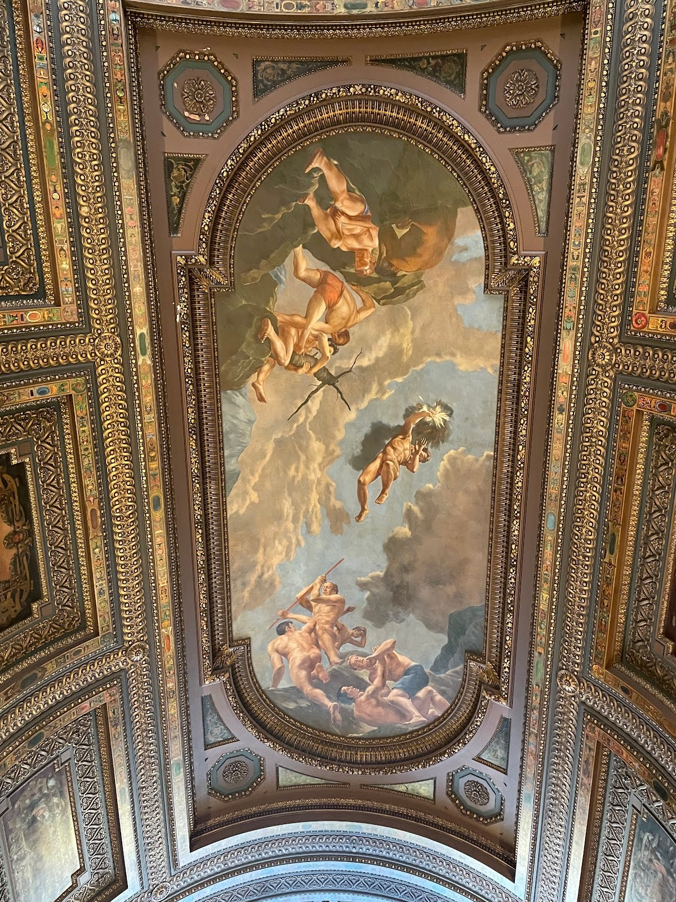
Painted Ceilings
This was taken at the Bryant Park Library
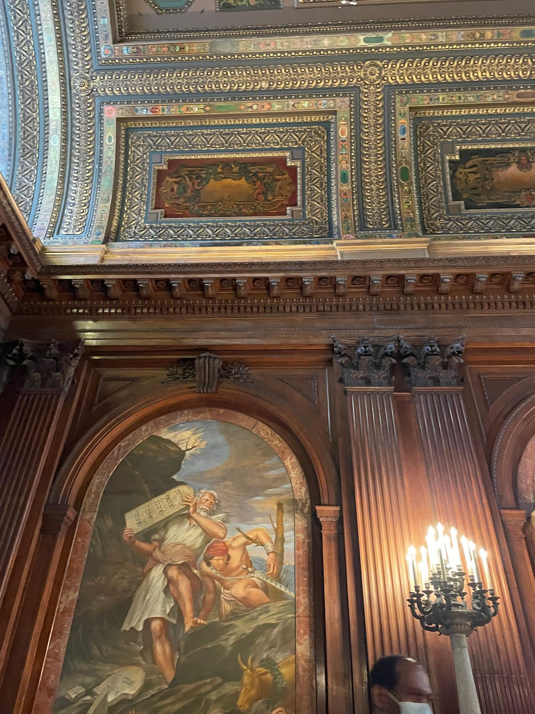
Fine Architecture
I felt like I was in a palace!
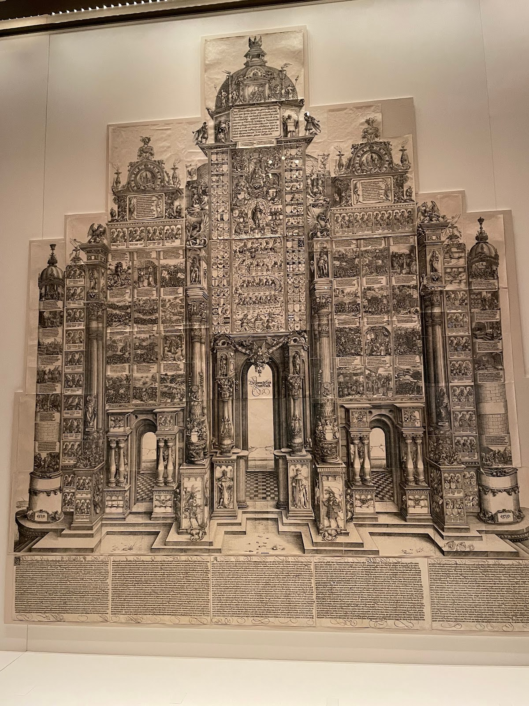
Patience is a virtue
15 pages of hand drawn architecture
`
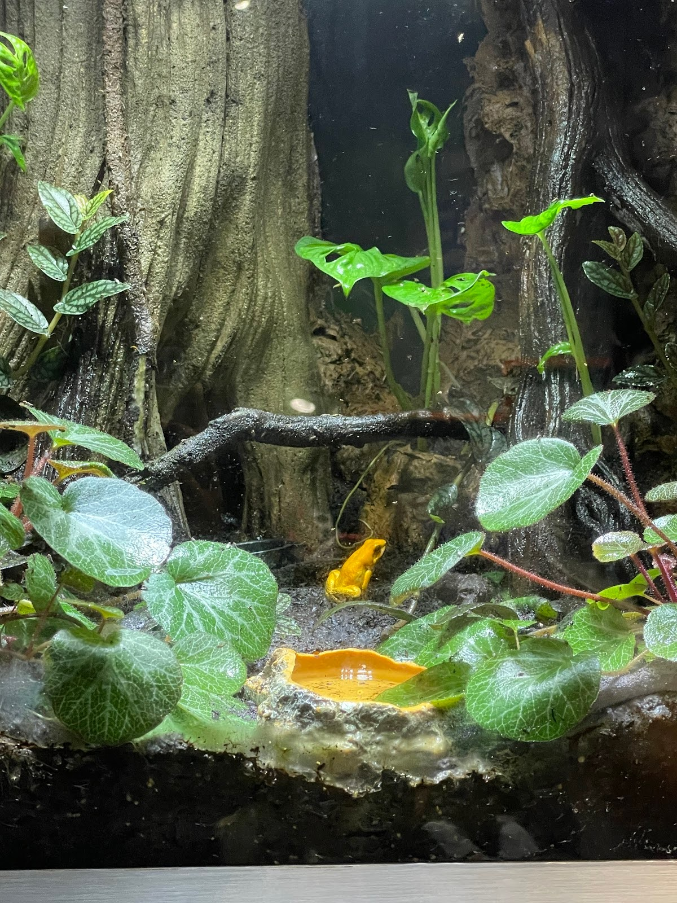
Froggy
Small but deady
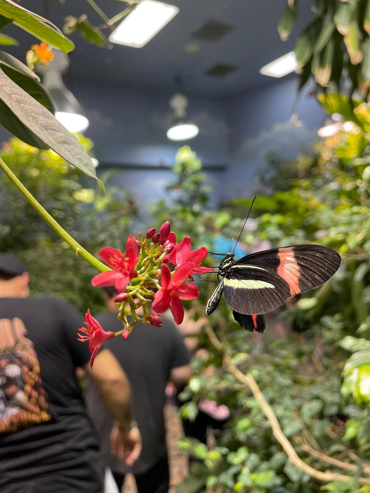
Beauty
Butterfly observatory
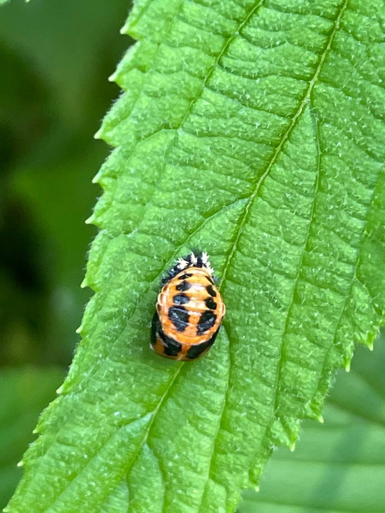
Orange Ladybug
I though ladybugs were supposed to be lucky, but this one was deadly...
The ones you see on your left are pictures of nature and animals. These remind me of the times I went camping and hiking. I love being outdoors and exploring nature as it is and just the events that come with camping. Like sitting by the campfire, telling spooky stories, going canoeing, river rafting, seeing animals like frogs , salamanders, and deer up close just gives calm vibes. I remember this one time we were camping and we decided to go walking up a path and out of nowhere I was told to stand still. They told me to turn my head a bit and I saw a dear just starting back at me. I didn't realize how big deer can be until that day. It was a crazy but cool experience. Thankfully we were not attacked by it, seeing how we were really close, only feets apart.
So this one is called stary lights. These pictures are a collection of places I have been through. One is from going to Ecuador and staring out from the balcony to a street of night lighted houses. The other one ths a series of candle lined upon a wall within a cathedral. This was a very historical sight located in the depth of Ecuador. The next one is a rainbow campfire!!. This one was very exciting for me cause it was one of the very first times I went camping ever.
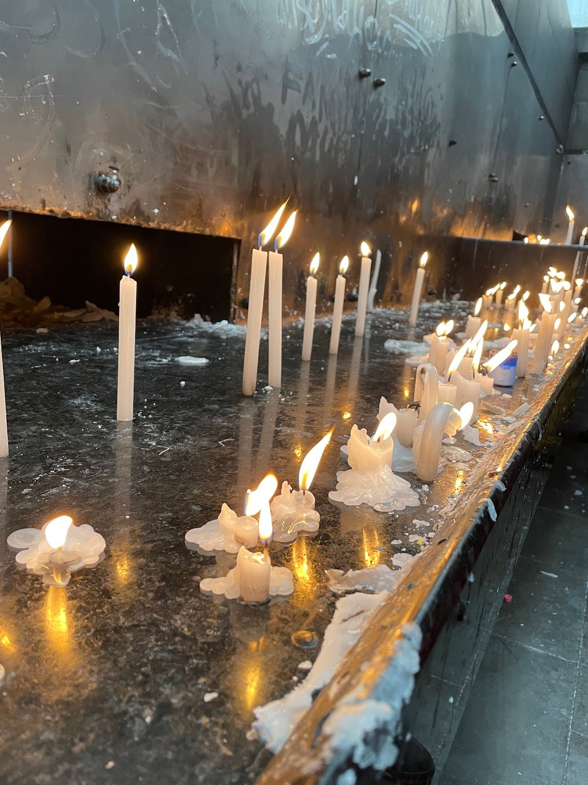
Cathedral
This was taken at a cathedral in Ecuador! We were able to light candles as a form of a wish
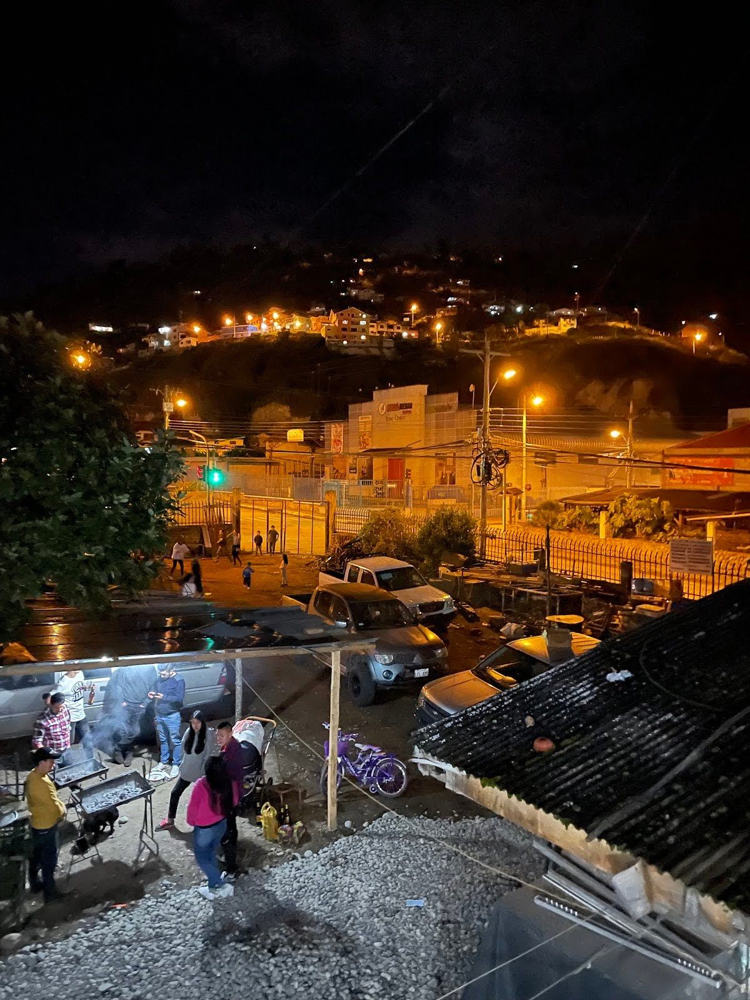
Campo lights
It felt so calming to see the houses light up at night!
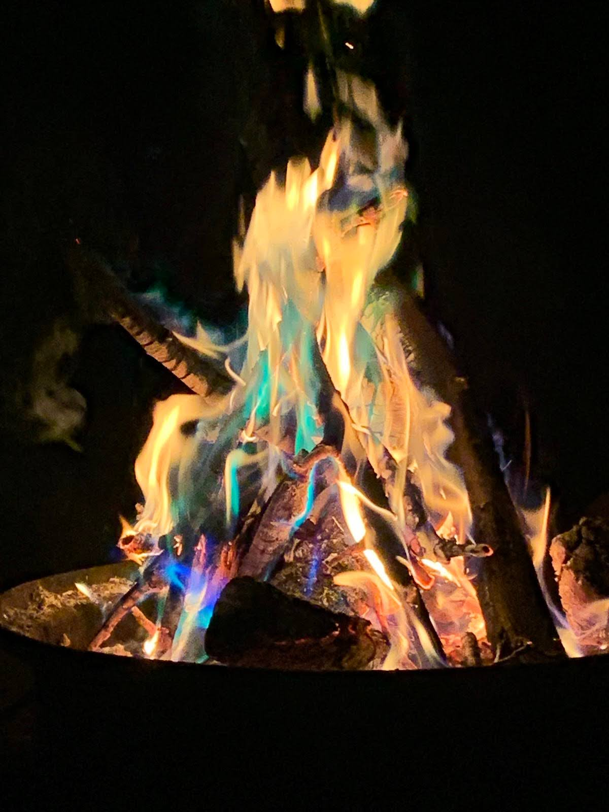
Camping Vibes
Let the spooky stories begin!
`
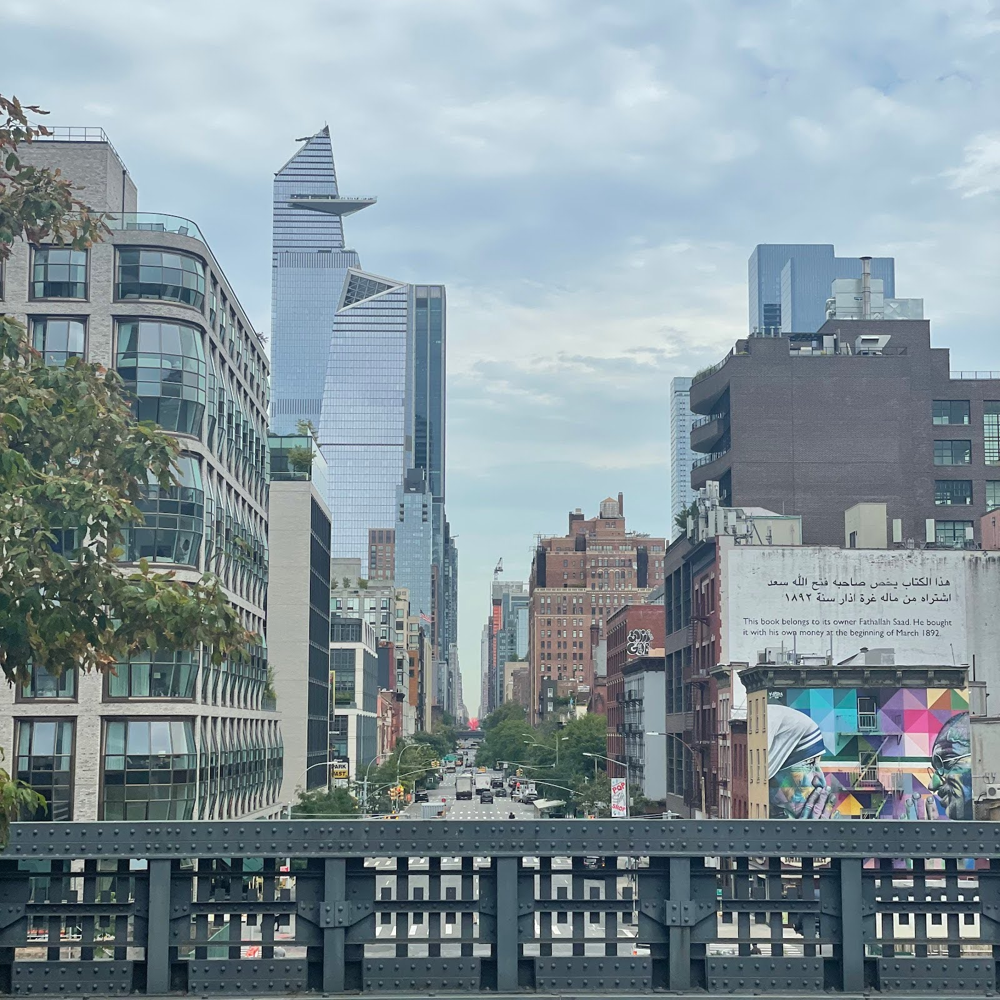
Long walks
I remeber walking this boardwalk from canal street to 42st! Thrice!
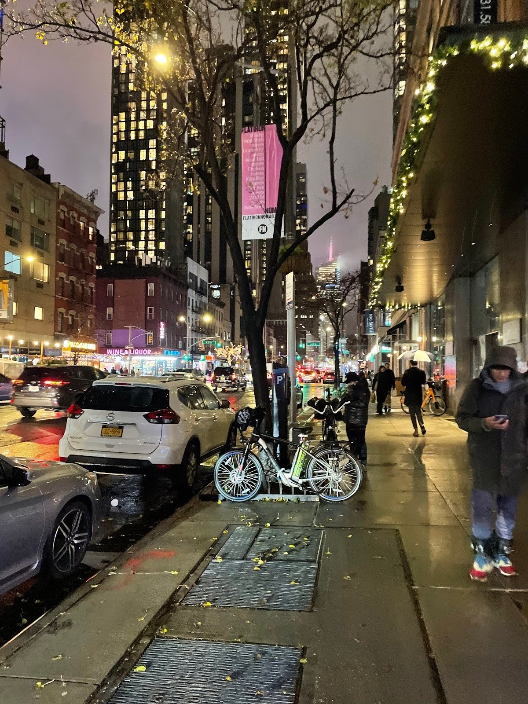
Forward to Soho!
If im not home Im most likly in manhattan :3
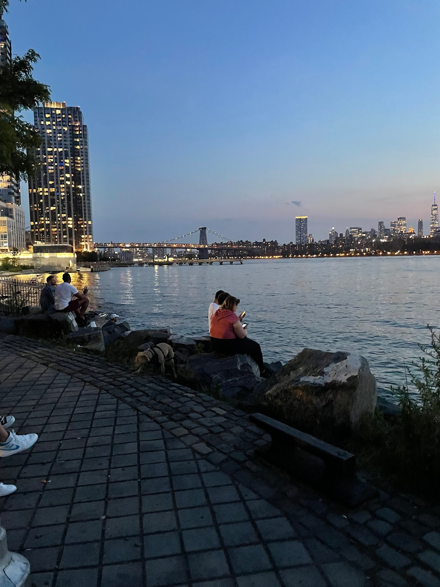
Talks by the shore
One of my favorite places to relax and let out stress. I also found a baby crab here!
So the ones you see on your left is what I would call a collection of City Vibes. Each one taken from diffrent parts of NEW YORK CITY!!! Some being one of my favorite parts to relax. Obviously everyone has their very own comfort zones and one of mine happened to be at bedford, by the riverside. I love exploring the city and time of the day and just being outside in general. I hate being couped up and feel like Im being sufforcated.